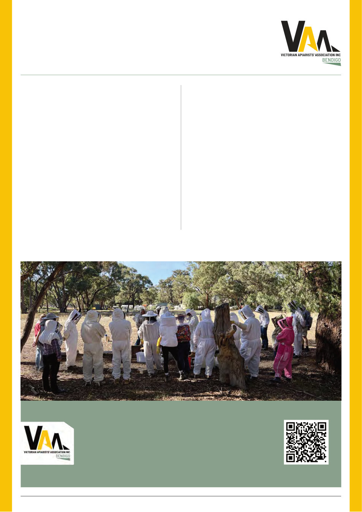

VAA AUSTRALIAN BEE JOURNAL | VOL. 109 No. 09 September 2026 | 11
The branch’s next weekend activity is on Sunday 20 September
– Inspecting Hives after winter.
The team is well underway planning our annual field day. We
are introducing a new section to the field day which is a children’s
corner. We will have Australian animals on display where you
can get up and personal with them, build a pollinators box and
do something creative with plaster. We will have our always-
popular open hive demonstrations, beginners corner, making
wax products, and presentations from AgVic Apiary and Chemical
Teams. We will have a variety of traders from Duxton bees, Collins
Honey, Buzz Beekeeping, Edmonds Honey and Bendigo Bee Boxes
to name a few. Food vans will also be there along with a regular
canteen run by our dedicated volunteers. We continue to support
the Harcourt community after the devastating fires. We are so
lucky that the recreation reserve was mostly untouched.
Don’t forget to put it in your diary
annual Field Day 11 October 2026
at Harcourt Recreational Reserve.
Despite the arrival of winter in Bendigo, our dedicated
members still enjoy catching up at our regular monthly
information evenings. Our August meeting was well
attended by our dedicated members along with three new
members. Our guest presenter was one of the winners of
the International Youth Beekeepers, Elan Myer. Elan and two
other Australians recipients travelled to Northern Ireland
for the conference. Elan gave an excellent presentation on
all the activities they covered whilst in Northern Ireland as
well as in other countries after the conference.
One of the Bendigo Branch members, Scott Wright won the
“best value added product” at the most recent VAA conference,
with his chilli-infused honey. Scott brought it and his creamed
honey to the Bendigo Branch August meeting for our members
to taste. Everyone really enjoyed his creamed honey, so next year
Richard Collins may have a competitor.
Bendigo has a member on the Resources Subcommittee,
Jake Nixon, and he provided a brief update on what is happening
VAA Bendigo Branch Report
August 2026
By Peta Dawe